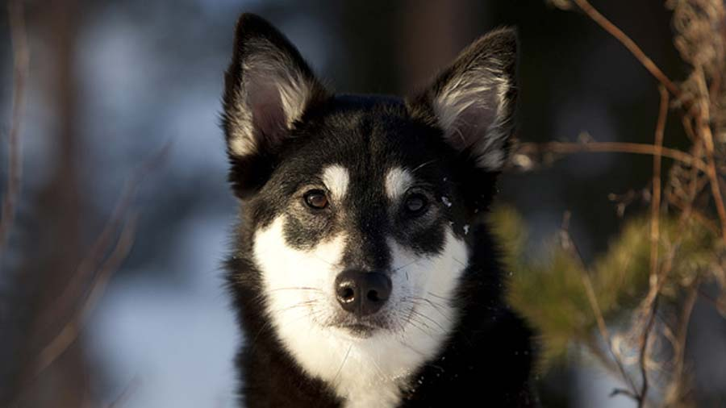
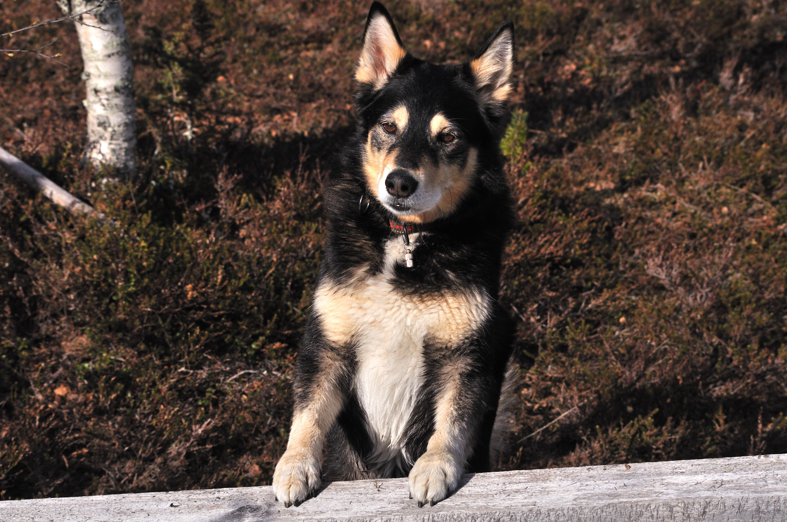
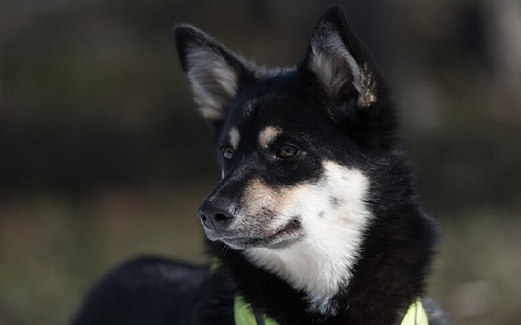

Lapponian Herder

origin
Finland
size
Medium
color
Black
type
Purebred
breed group
Herding
character
Hypoallergenic
temperament
Calm, Docile, Energetic, Friendly,Vocal
height
19–21 inches (48–54 cm)
weight
55-65 pounds
geography
Europe
overview
The Lapinporokoira is a medium-sized dog, with medium length fur in a double coat. Ears are pricked (standing up; drop ears are a disqualifying fault.) Colour is generally black or dark grey or brown, with a lighter shade on the head and lower parts of the body, often with white markings. Height should be 51 cm (20 in) at the withers for males, 46 cm (18 in) for females. Males and females should look distinctly different. Weight is between 55-65 pounds, males usually heavier than females.
The breed standard states that the dog should be calm, friendly, and docile, but also energetic. Most herding breeds need to be given regular exercise. The temperament of individual dogs may vary.
history
The Lapinporokoira is recognised under Finnish sponsorship as Fédération Cynologique Internationale breed number 284, in Group 5 Spitz and primitive types Section 3 Nordic Watchdogs and Herders. The stud book for the breed remains open. Exported to North America, it is recognised there by the United Kennel Club in the Herding Group (the United Kennel Club places the Finnish Lapphund in the Northern Breed Group.) It is also recognised by various minor kennel clubs and internet based dog registry businesses, and promoted as a rare breed for those seeking a unique pet.
Photo Gallery

